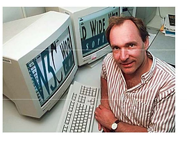

Para el año 1980, Tim Berners-Lee, un investigador del CERN en Ginebra, diseñó un sistema de navegación de hipertexto y desarrolló, con la ayuda de Robert Cailliau, un software denominado Enquire para la navegación.
A finales de 1990, Tim Berners-Lee terminó el protocolo HTTP (Protocolo de transferencia de hipertexto) y el protocolo HTML (Lenguaje de marcado de hipertexto) para navegar por las redes a través de hipervínculos. Así nació la World Wide Web.
